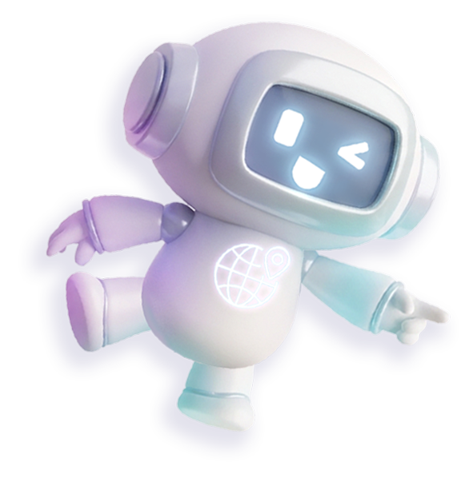
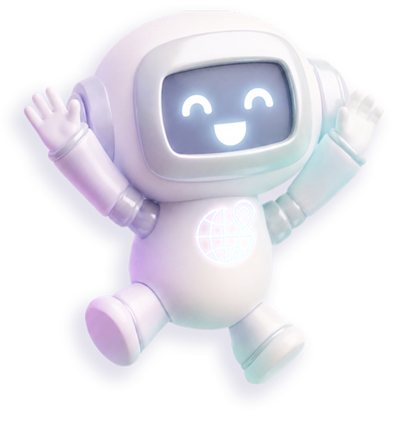
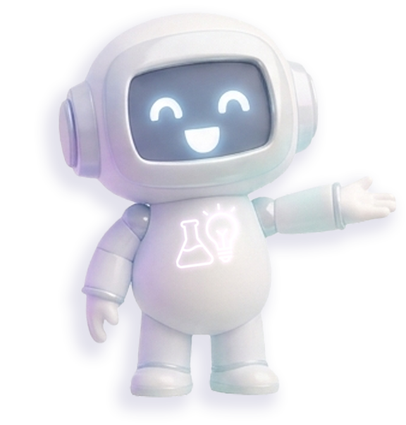
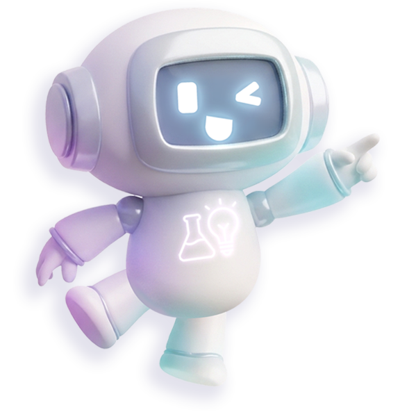
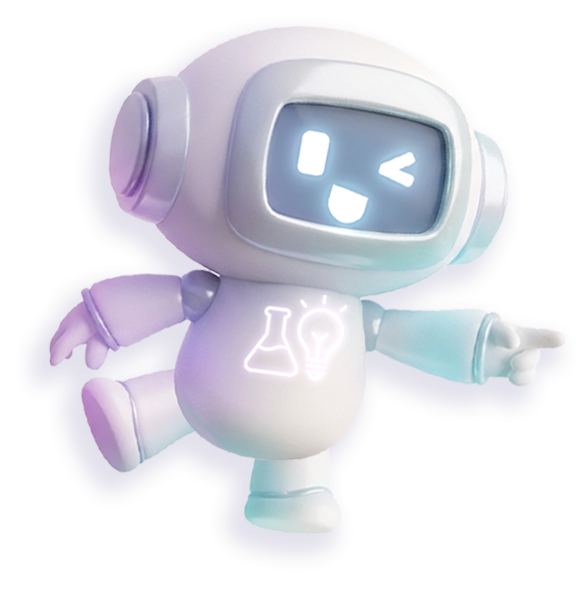

안내 캐릭터 · 말풍선
실제 화면(1920×960)을 절반 크기로 보여줌. 모양은 공용 .guide-bubble(흰 말풍선 · 보라 테두리 · 48px · 꼬리 img/common/p_guide_tail.png)과 .guide-character(캐릭터 자리)로 통일. 말풍선과 캐릭터는 한 묶음으로 놓는 .guide-set을 쓰고, 캐릭터 그림은 사회 sa/img/character/sa_*.png, 과학 gwa/img/character/gwa_*.png(과학 전용 11포즈, 아래 과학 캐릭터 참고)에서 가져옴.
말풍선 + 캐릭터 한 세트 .guide-set
말풍선과 캐릭터를 한 묶음으로 놓는 방법입니다. 말풍선 자리는 공용으로 고정(아래 모서리 기준이라 글이 길어지면 위로 늘어남)이고, 캐릭터 그림은 전부 같은 캔버스(576×603)로 만들어져 있어서 포즈가 달라도 위치·크기가 같습니다(왼쪽 110px · 아래 40px). 포즈별 좌표를 따로 적지 않습니다. is-포즈 클래스는 이름표일 뿐 위치에는 영향이 없습니다.
마크업: <div class="guide-set is-wink-point4"><p class="guide-bubble is-center">문구</p><div class="guide-character"><img src="../img/character/sa_wink_point4.png" alt=""></div></div>.
말풍선 크기는 글 줄 수에 따라 initGuideSay가 자동으로 정함: 기본(폭 510 · 글자 48px) → 5줄 이상이면 .is-medium + .is-long(폭 610 · 44px) → 그래도 5줄 이상이면 .is-large(폭 660, 왼쪽으로 넓어짐). 꼬리 위치는 세 크기가 같고, 글자 간격을 더 좁힐 때는 .is-tight(-0.08em). 말풍선 폭 --gb-w·위치 --gb-left/--gb-bottom·캐릭터 --gc-left/--gc-bottom/--gc-w 는 페이지에서 덮어쓸 수 있음.
안녕! 함께 시작해 볼까요?

친구의 메시지를 읽었을 때
어떤 감정이 드나요?
마음에 드는 것을
골라 볼까요?

위쪽 화면을
살펴봐요.

오른쪽 위를
눌러요.
폰 화면을
눌러요.

입력창을
클릭해보세요.

화면 속 폰을
살펴봐요.

이런 선택지가
있어요.

이런 선택지가
있어요.
잘했어요!
모두 끝냈어요!
축하해요!

과학 캐릭터 gwa/img/character/gwa_*.png
과학 차시용 안내 로봇(몸통에 플라스크·전구 문양)입니다. 사회와 마크업·좌표가 같고 그림 경로만 ../img/character/gwa_*.png 입니다. 포즈 11종: main · main_point · smile_point · smile_present · wink_point · wink_point2 · wink_point3 · wink_point4 · wink_present · wink_present2 · wink_walk.
initGuideSay 는 그림 경로의 gwa_ 를 보고 과학 포즈 목록을 미리 불러옵니다.
안녕! 함께 시작해 볼까요?

여기를 살펴봐요.
이쪽을 눌러요.
잘했어요!
함께 정리해 봐요.

위쪽 화면을
살펴봐요.

오른쪽 위를
눌러요.
폰 화면을
눌러요.

아래쪽을
눌러요.
이렇게 해 볼까요?
자, 보세요!
다음으로
가 볼까요?